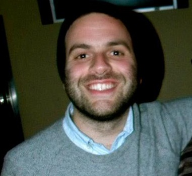

Hello!
 My name is Salvatore (Sal for short) Lardizzone. I am 27 years of age, and currently live in Carmel, NY. For work, I have been employed at an executive search firm called Leitner Sarch Consultants for almost four years now. Shortly after graduating from Fordham University in 2008 with a degree in Communications, I essentially fell into the field during my extensive job search. Located in White Plains, NY, LSC is a boutique recruiting firm that specializes in placing wealth management professionals. As Research Director at LSC, I provide our recruiters with leads, useful data, and candidate lists based on search criteria that is requested by our clients.
Bored yet? ME TOO!
As the monotony of the job started to become overwhelmng, I began to pick up several tutorials, I subscribed to lynda.com, and attempted several of the tracks on codeacademy.com in order to see if I would enjoy web development/programming (which I did). I even took a C++ course at Brooklyn College after work while I was living in Greenpoint with intentions of possibly beginning a Computer Science track. But when I heard about General Assembly through a friend, I immediately jumped on the idea and relocated back home to Carmel in order to save up for some long form courses (and hopefully the WDI). I am currently 3/4 done with the Front End Web Development course and I absolutely love it. My brain is being put to the test again, and it feels great. After this course I hope to continue learning the real meat of the web that is back end development.
Outside of work I enjoy playing music, specifically bass, and have been in several bands such as Brooklyn bred Such Hounds, and Boston based VYGR. I also watch an immense amount of movies, as I am constantly on Rotten Tomatoes taking note of all the newest and acclaimed releases.
I am looking forward to the in person interview!